Capítulo 5 MACHINE LEARNING: CONCEPTOS BÁSICOS

5.1 ML y Algoritmos
Como se habia mencionado, el Machine Learning es una disciplina del campo de la Inteligencia Artificial que, a través de algoritmos, dota a los ordenadores de la capacidad de identificar patrones en datos para hacer predicciones. Este aprendizaje permite a los computadores realizar tareas específicas de forma autónoma.
El término se utilizó por primera vez en 1959. Sin embargo, ha ganado relevancia en los últimos años debido al aumento de la capacidad de computación y al BOOM de los datos.
Un algoritmo para computadoras puede ser pensado como una receta. Describe exactamente qué pasos se realizan uno tras otro. Los ordenadores no entienden las recetas de cocina, sino los lenguajes de programación: En ellos, el algoritmo se descompone en pasos formales (comandos) que el ordenador puede entender.
Algunos problemas pueden formularse fácilmente como un algoritmo, por ejemplo, contando del 1 al 100 o comprobando si un número es un número primo. Para otros problemas, esto es muy difícil, por ejemplo, reconocer la escritura o el texto de las teclas. Aquí los procedimientos de aprendizaje de la máquina ayudan. Durante mucho tiempo se han desarrollado algoritmos que permiten analizar los datos existentes y aplicar los conocimientos derivados de ello a los nuevos datos.
La cuestión no es solo saber para qué sirve el Machine Learning, sino que saber cómo funciona y cómo poder implementarlo en la industria para aprovecharse de sus beneficios. Hay ciertos pasos que usualmente se siguen para crear un modelo de Machine Learning. Estos son típicamente realizados por científicos de los datos que trabajan en estrecha colaboración con los profesionales de los negocios para los que se está desarrollando el modelo.
- Seleccionar y preparar un conjunto de datos de entrenamiento
Los datos de entrenamiento son un conjunto de datos representativos de los datos que el modelo de Machine Learning ingerirá para resolver el problema que está diseñado para resolver.
Los datos de entrenamiento deben prepararse adecuadamente: aleatorizados y comprobados en busca de desequilibrios o sesgos que puedan afectar al entrenamiento. También deben dividirse en dos subconjuntos: el subconjunto de entrenamiento, que se utilizará para entrenar el algoritmo, y el subconjunto de validación, que se utilizará para probarlo y perfeccionarlo.

- Elegir un algoritmo para ejecutarlo en el conjunto de datos de entrenamiento
Este es uno de los pasos más importantes, ya que se debe elegir qué algoritmo utilizar, siendo este un conjunto de pasos de procesamiento estadístico. El tipo de algoritmo depende del tipo (supervisado o no supervisado), la cantidad de datos del conjunto de datos de entrenamiento y del tipo de problema que se debe resolver.

- Entrenamiento del algoritmo para crear el modelo
El entrenamiento del algoritmo es un proceso iterativo: implica ejecutar las variables a través del algoritmo, comparar el resultado con los resultados que debería haber producido, ajustar los pesos y los sesgos dentro del algoritmo que podrían dar un resultado más exacto, y ejecutar las variables de nuevo hasta que el algoritmo devuelva el resultado correcto la mayoría de las veces. El algoritmo resultante, entrenado y preciso, es el modelo de Machine Learning.

- Usar y mejorar el modelo
El paso final es utilizar el modelo con nuevos datos y, en el mejor de los casos, para que mejore en precisión y eficacia con el tiempo. De dónde procedan los nuevos datos dependerá del problema que se resuelva. Por ejemplo, un modelo de Machine Learning diseñado para identificar el spam ingerirá mensajes de correo electrónico, mientras que un modelo de Machine Learning que maneja una aspiradora robot ingerirá datos que resulten de la interacción en el mundo real con muebles movidos o nuevos objetos en la habitación.
5.2 Análisis Supervisado vs No supervisado
Los algoritmos de Machine Learning se dividen en tres categorías, siendo las dos primeras las más comunes:

- Aprendizaje supervisado: estos algoritmos cuentan con un aprendizaje previo basado en un sistema de etiquetas asociadas a unos datos que les permiten tomar decisiones o hacer predicciones.
Algunos ejemplos son:
- Un detector de spam que etiqueta un e-mail como spam o no.
- Predecir precios de casas
- Clasificación de imagenes
- Predecir el clima
- ¿Quiénes son los clientes descontentos?- Aprendizaje no supervisado: en el aprendizaje supervisado, la idea principal es aprender bajo supervisión, donde la señal de supervisión se nombra como valor objetivo o etiqueta. En el aprendizaje no supervisado, carecemos de este tipo de etiqueta. Por lo tanto, necesitamos encontrar nuestro camino sin ninguna supervisión ni guía. Esto simplemente significa que necesitamos descubrir qué es qué por nosotros mismos.
Algunos ejemplos son:
- Encontrar segmentos de clientes.
- Reducir la complejidad de un problema
- Selección de variables
- Encontrar grupos
- Reducción de dimensionalidad- Aprendizaje por refuerzo: su objetivo es que un algoritmo aprenda a partir de la propia experiencia. Esto es, que sea capaz de tomar la mejor decisión ante diferentes situaciones de acuerdo a un proceso de prueba y error en el que se recompensan las decisiones correctas.
Algunos ejemplos son:
- Reconocimiento facial
- Diagnósticos médicos
- Clasificar secuencias de ADN5.2.1 Regresión vs clasificación
Existen dos tipos principales de aprendizaje supervisado, esto depende del tipo de la variable respuesta:
5.2.1.1 Clasificación
En el aprendizaje supervisado, los algoritmos de clasificación se usan cuando el resultado es una etiqueta discreta. Esto quiere decir que se utilizan cuando la respuesta se fundamenta en conjunto finito de resultados.
5.2.1.2 Regresión
El análisis de regresión es un subcampo del aprendizaje automático supervisado cuyo objetivo es establecer un método para la relación entre un cierto número de características y una variable objetivo continua.

5.3 Sesgo vs varianza
En el mundo de Machine Learning cuando desarrollamos un modelo nos esforzamos para hacer que sea lo más preciso, ajustando los parámetros, pero la realidad es que no se puede construir un modelo 100% preciso ya que nunca pueden estar libres de errores.
Comprender cómo las diferentes fuentes de error generan sesgo y varianza nos ayudará a mejorar el proceso de ajuste de datos, lo que resulta en modelos más precisos, adicionalmente también evitará el error de sobreajuste y falta de ajuste.
5.3.0.1 Errores reducibles
- Error por sesgo:
Es la diferencia entre la predicción esperada de nuestro modelo y los valores verdaderos. Aunque al final nuestro objetivo es siempre construir modelos que puedan predecir datos muy cercanos a los valores verdaderos, no siempre es tan fácil porque algunos algoritmos son simplemente demasiado rígidos para aprender señales complejas del conjunto de datos.
Imagina ajustar una regresión lineal a un conjunto de datos que tiene un patrón no lineal, no importa cuántas observaciones más recopiles, una regresión lineal no podrá modelar las curvas en esos datos. Esto se conoce como underfitting.
- Error por varianza:
Se refiere a la cantidad que la estimación de la función objetivo cambiará si se utiliza diferentes datos de entrenamiento. La función objetivo se estima a partir de los datos de entrenamiento mediante un algoritmo de Machine Learning, por lo que deberíamos esperar que el algoritmo tenga alguna variación. Idealmente no debería cambiar demasiado de un conjunto de datos de entrenamiento a otro.

Los algoritmos de Machine Learning que tienen una gran varianza están fuertemente influenciados por los detalles de los datos de entrenamiento, esto significa que los detalles de la capacitación influyen en el número y los tipos de parámetros utilizados para caracterizar la función de mapeo.
5.3.0.2 Error irreducible
El error irreducible no se puede reducir, independientemente de qué algoritmo se usa. También se le conoce como ruido y, por lo general, proviene por factores como variables desconocidas que influyen en el mapeo de las variables de entrada a la variable de salida, un conjunto de características incompleto o un problema mal enmarcado. Acá es importante comprender que no importa cuán bueno hagamos nuestro modelo, nuestros datos tendrán cierta cantidad de ruido o un error irreductible que no se puede eliminar.
5.3.0.3 Balance entre sesgo y varianza o Trade-off
El objetivo de cualquier algoritmo supervisado de Machine Learning es lograr un bias bajo, una baja varianza y a su vez el algoritmo debe lograr un buen rendimiento de predicción.

El bias frente a la varianza se refiere a la precisión frente a la consistencia de los modelos entrenados por su algoritmo. Podemos diagnosticarlos de la siguiente manera:
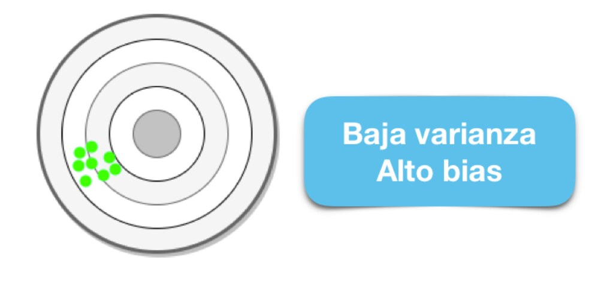
Los algoritmos de baja varianza (alto bias) tienden a ser menos complejos, con una estructura subyacente simple o rígida.
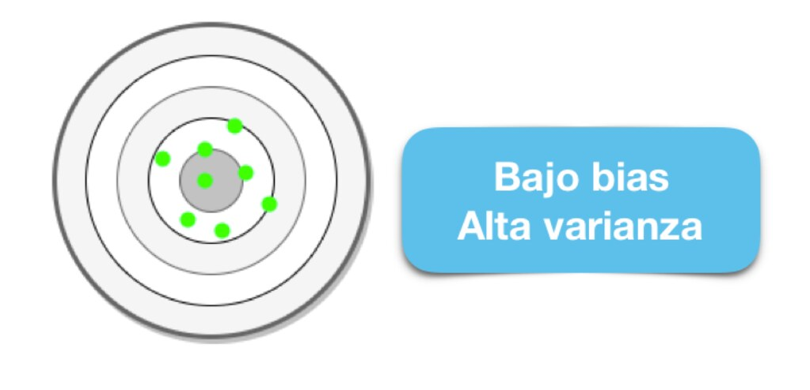
Los algoritmos de bajo bias (alta varianza) tienden a ser más complejos, con una estructura subyacente flexible.
No hay escapatoria a la relación entre el bias y la varianza en Machine Learning, aumentar el bias disminuirá la varianza, aumentar la varianza disminuirá el bias.
5.3.0.4 Error total
Comprender el sesgo y la varianza es fundamental para comprender el comportamiento de los modelos de predicción, pero en general lo que realmente importa es el error general, no la descomposición específica. El punto ideal para cualquier modelo es el nivel de complejidad en el que el aumento en el sesgo es equivalente a la reducción en la varianza.

Para construir un buen modelo, necesitamos encontrar un buen equilibrio entre el bias y la varianza de manera que minimice el error total.
Un equilibrio óptimo de bias y varianza nunca sobreequiparía o no sería adecuado para el modelo. Por lo tanto comprender el bias y la varianza es fundamental para comprender el comportamiento de los modelos de predicción.
5.3.0.5 Overfitting
El modelo es muy particular.
Error debido a la varianza
Durante el entrenamiento tiene un desempeño muy bueno, pero al pasar nuevos datos su desempeño es malo.
5.3.0.6 Underfitting
El modelo es demasiado general.
Error debido al sesgo.
Durante el entrenamiento no tiene un buen desempeño.
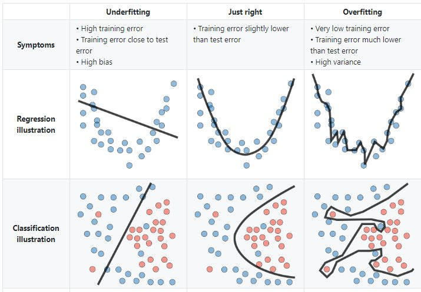
5.4 Pre-procesamiento e ingeniería de datos
Hay varios pasos que se deben de seguir para crear un modelo útil:
- Recopilación de datos.
- Limpieza de datos.
- Creación de nuevas variables.
- Estimación de parámetros.
- Selección y ajuste del modelo.
- Evaluación del rendimiento.
Al comienzo de un proyecto, generalmente hay un conjunto finito de datos disponibles para todas estas tareas.
OJO: A medida que los datos se reutilizan para múltiples tareas, aumentan los riesgos de agregar sesgos o grandes efectos de errores metodológicos.
5.4.1 Pre-procesamiento de datos
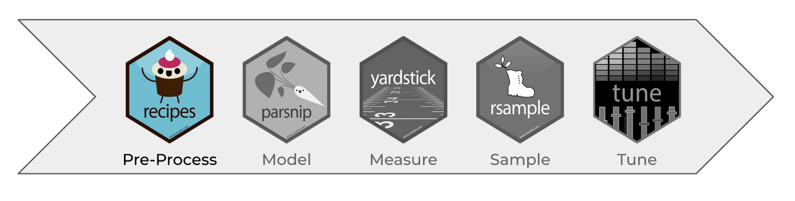
Como punto de partida para nuestro flujo de trabajo de aprendizaje automático, necesitaremos datos de entrada. En la mayoría de los casos, estos datos se cargarán y almacenarán en forma de data frames o tibbles en R. Incluirán una o varias variables predictoras y, en caso de aprendizaje supervisado, también incluirán un resultado conocido.
Sin embargo, no todos los modelos pueden lidiar con diferentes problemas de datos y, a menudo, necesitamos transformar los datos para obtener el mejor rendimiento posible del modelo. Este proceso se denomina pre-procesamiento y puede incluir una amplia gama de pasos, como:
- Dicotomización de variables: Variables cualitativas que solo pueden tomar el valor \(0\) o \(1\) para indicar la ausencia o presencia de una condición específica. Estas variables se utilizan para clasificar los datos en categorías mutuamente excluyentes o para activar comandos de encendido / apagado

- Near Zero Value (nzv) o Varianza Cero: En algunas situaciones, el mecanismo de generación de datos puede crear predictores que solo tienen un valor único (es decir, un “predictor de varianza cercando a cero”). Para muchos modelos (excluidos los modelos basados en árboles), esto puede hacer que el modelo se bloquee o que el ajuste sea inestable.
De manera similar, los predictores pueden tener solo una pequeña cantidad de valores únicos que ocurren con frecuencias muy bajas.
- Imputaciones: Si faltan algunos predictores, ¿deberían estimarse mediante imputación?
 * Des-correlacionar: Si hay predictores correlacionados, ¿debería mitigarse esta correlación? Esto podría significar filtrar predictores, usar análisis de componentes principales o una técnica basada en modelos (por ejemplo, regularización).
* Des-correlacionar: Si hay predictores correlacionados, ¿debería mitigarse esta correlación? Esto podría significar filtrar predictores, usar análisis de componentes principales o una técnica basada en modelos (por ejemplo, regularización).
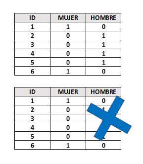 * Normalizar: ¿Deben centrarse y escalar los predictores?
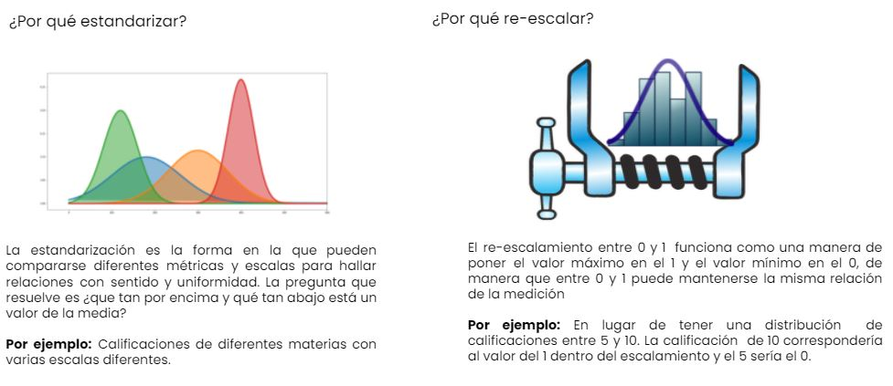
- Transformar: ¿Es útil transformar los predictores para que sean más simétricos? (por ejemplo, escala logarítmica).
Dependiendo del caso de uso, algunos pasos de pre-procesamiento pueden ser indispensables para pasos posteriores, mientras que otros solo son opcionales. Sin embargo, dependiendo de los pasos de pre-procesamiento elegidos, el rendimiento del modelo puede cambiar significativamente en pasos posteriores. Por lo tanto, es muy común probar varias configuraciones.
En la tabla, \(\checkmark\) indica que el método es obligatorio para el modelo y \(\times\) indica que no lo es. El símbolo \(\circ\) significa que la técnica puede ayudar al modelo, pero no es obligatorio.
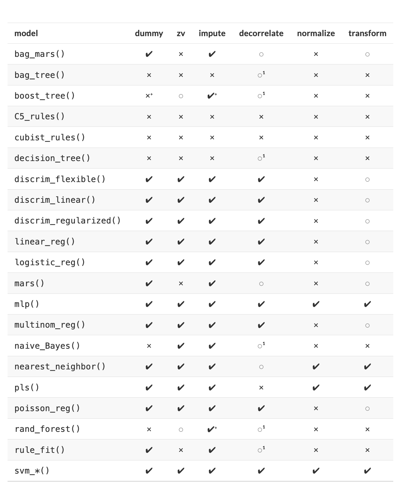 Notación:
- Es posible que la des-correlación de predictores no ayude a mejorar el rendimiento. Sin embargo, menos predictores correlacionados pueden mejorar la estimación de las puntuaciones de importancia de la varianza. Esencialmente, la selección de predictores altamente correlacionados es casi aleatoria.
La notación \(+\) significa que la respuesta depende de la implementación:
Teoricamente, cualquier modelo basado en árboles no requiere imputación de datos, sin embargo, muchas implementaciones de conjuntos de árboles requieren imputación.
Si bien los métodos de refuerzo basados en árboles generalmente no requieren la creación de variables ficticias, los modelos que usan
xgboostsí lo hacen.
5.4.2 Ingeniería de datos
La ingeniería de datos abarca actividades que reformatean los valores de los predictores para que se puedan utilizar de manera eficaz para nuestro modelo. Esto incluye transformaciones y codificaciones de los datos para representar mejor sus características importantes.
Por ejemplo:
1.- Supongamos que un conjunto de datos tiene dos predictores que se pueden representar de manera más eficaz en nuestro modelo como una proporción, así, tendríamos un nuevo predictor a partir de la proporción de los dos predictores originales.
| x | x_prop |
|---|---|
| 691 | 0.1836789 |
| 639 | 0.1698565 |
| 969 | 0.2575758 |
| 955 | 0.2538543 |
| 508 | 0.1350346 |
2.- Al elegir cómo codificar nuestros datos en el modelado, podríamos elegir una opción que creemos que está más asociada con el resultado. El formato original de los datos, por ejemplo numérico (edad) versus categórico (grupo).
| Edad | Grupo |
|---|---|
| 7 | Niños |
| 78 | Adultos mayores |
| 17 | Adolescentes |
| 25 | Adultos |
| 90 | Adultos mayores |
La ingeniería y el pre-procesamiento de datos también pueden implicar el reformateo requerido por el modelo. Algunos modelos utilizan métricas de distancia geométrica y, en consecuencia, los predictores numéricos deben centrarse y escalar para que estén todos en las mismas unidades. De lo contrario, los valores de distancia estarían sesgados por la escala de cada columna.
5.4.3 Recetas
Una receta es un objeto que define una serie de pasos para el procesamiento de datos. A diferencia del método de fórmula dentro de una función de modelado, la receta define los pasos sin ejecutarlos inmediatamente; es sólo una especificación de lo que se debe hacer.
Como ejemplo utilizaremos un subconjunto de predictores disponibles en los datos de
vivienda Ames:
Vecindario (cualitativa, con 29 vecindarios en el subconjunto, nombre: neighborhood )
La superficie habitable bruta sobre el nivel del suelo (continua, nombre: Gr_Liv_Area)
Año de constriccuón (nombre: Year_Built)
Tipo de edificio (nombre: Bldg_Type con los valores: OneFam \(= 1,924\) , TwoFmCon \(=46\), Duplex \(=95\), Twnhs \(=80\), and TwnhsE \(=197\))
\(\dots\)
Un modelo de regresión lineal ordinario inicial se ajusta a estos datos con la función estándar lm()
de la siguiente manera:
lm(Sale_Price ~ Neighborhood + log10(Gr_Liv_Area) + Year_Built + Bldg_Type, data = ames)Cuando se ejecuta esta función, los datos se convierten en a una matriz de diseño numérico (también llamada matriz de modelo) y luego se utiliza el método de mínimos cuadrados para estimar los parámetros. Lo que hace la fórmula anterior se puede descomponer en una serie de pasos:
1.- El precio de venta se define como el resultado, mientras que las variables de vecindario, superficie habitable bruta, año de construcción y tipo de edificio se definen como predictores.
2.- Se aplica una transformación logarítmica al predictor de superficie habitable bruta.
3.- Las columnas de vecindad y tipo de edificio se convierten de un formato no numérico a un formato numérico (dado que los mínimos cuadrados requieren predictores numéricos).
La siguiente receta es equivalente a la fórmula anterior:
simple_ames <-
recipe(Sale_Price ~ Neighborhood + Gr_Liv_Area + Year_Built + Bldg_Type,
data = ames) %>%
step_log(Gr_Liv_Area, base = 10) %>%
step_dummy(all_nominal_predictors())
simple_ames## Data Recipe
##
## Inputs:
##
## role #variables
## outcome 1
## predictor 4
##
## Operations:
##
## Log transformation on Gr_Liv_Area
## Dummy variables from all_nominal_predictors()Analicemos esto:
La función
recipe()captura los roles de las variables, (por ejemplo, predictor, resultado). Solo ustiliza los datosamespara determinar los tipos de datos para las columnas.step_log()declara que la variable Gr_Liv_Area debe transformarse en logaritmo.step_dummy()se usa para especificar qué variables deben convertirse de un formato cualitativo a un formato cuantitativo, en este caso, usando variables ficticias o indicadoras.La función
all_nominal_predictors()captura los nombres de las columnas predictoras que actualmente son de carácter factor.
Ventajas de usar una receta:
Los cálculos se pueden reciclar entre modelos ya que no están estrechamente acoplados a la función de modelado.
Una receta permite un conjunto más amplio de opciones de procesamiento de datos que las que pueden ofrecer las fórmulas.
La sintaxis puede ser muy compacta. Por ejemplo,
all_nominal_predictors()se puede usar para capturar muchas variables para tipos específicos de procesamiento, mientras que una fórmula requeriría que cada una se enumere explícitamente.Todo el procesamiento de datos se puede capturar en un solo objeto en lugar de tener scripts que se repiten o incluso se distribuyen en diferentes archivos.
5.4.3.1 Pasos de recetas
5.4.3.1.1 Codificación de datos cualitativos en formato numérico
Una de las tareas de ingeniería de datos más comunes es transformar datos nominales o cualitativos (factores o caracteres) para que puedan codificarse o representarse numéricamente. A veces, podemos alterar los niveles de factores de una columna cualitativa de manera útil antes de tal transformación.
Por ejemplo:
step_unknown()cambia los valores perdidos en un nivel de factor “desconocido.”step_novel()puede asignar un nuevo nivel si anticipamos que se puede encontrar un nuevo factor en datos futuros.step_other()analiza las frecuencias de los niveles de los factores en el conjunto de datos y convierte los valores que ocurren con poca frecuencia a un nivel general de “otro,” con un umbral que se puede especificar.
Un buen ejemplo es el predictor de vecindad en nuestros datos:
ggplot(ames, aes(y = Neighborhood)) +
geom_bar() +
labs(y = NULL)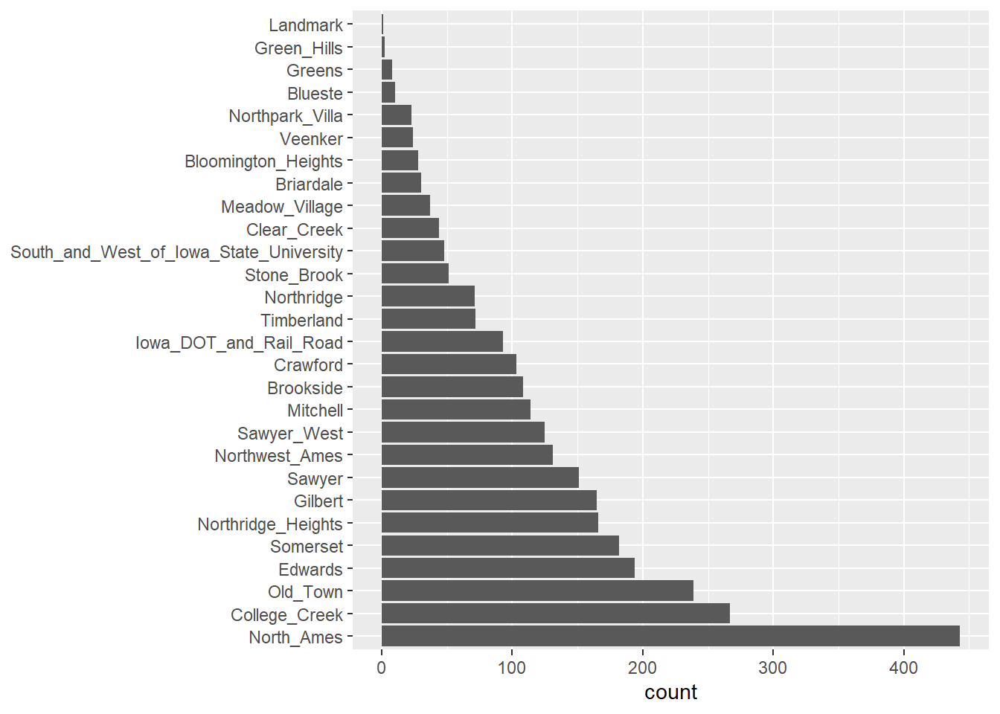
Aquí hay dos vecindarios que tienen menos de cinco propiedades; en este caso, no se incluyó ninguna casa en el vecindario Landmark.
Para algunos modelos, puede resultar problemático tener variables ficticias con
una sola entrada distinta de cero en la columna. Como mínimo, es muy improbable
que estas características sean importantes para un modelo.
Si agregamos step_other (Neighborhood, threshold = 0.01) a nuestra receta, el último \(1\%\) de los vecindarios se agrupará en un nuevo nivel llamado “otro,” esto atrapará a 8 vecindarios.
simple_ames <-
recipe(Sale_Price ~ Neighborhood + Gr_Liv_Area + Year_Built + Bldg_Type,
data = ames) %>%
step_log(Gr_Liv_Area, base = 10) %>%
step_other(Neighborhood, threshold = 0.01) %>%
step_dummy(all_nominal_predictors())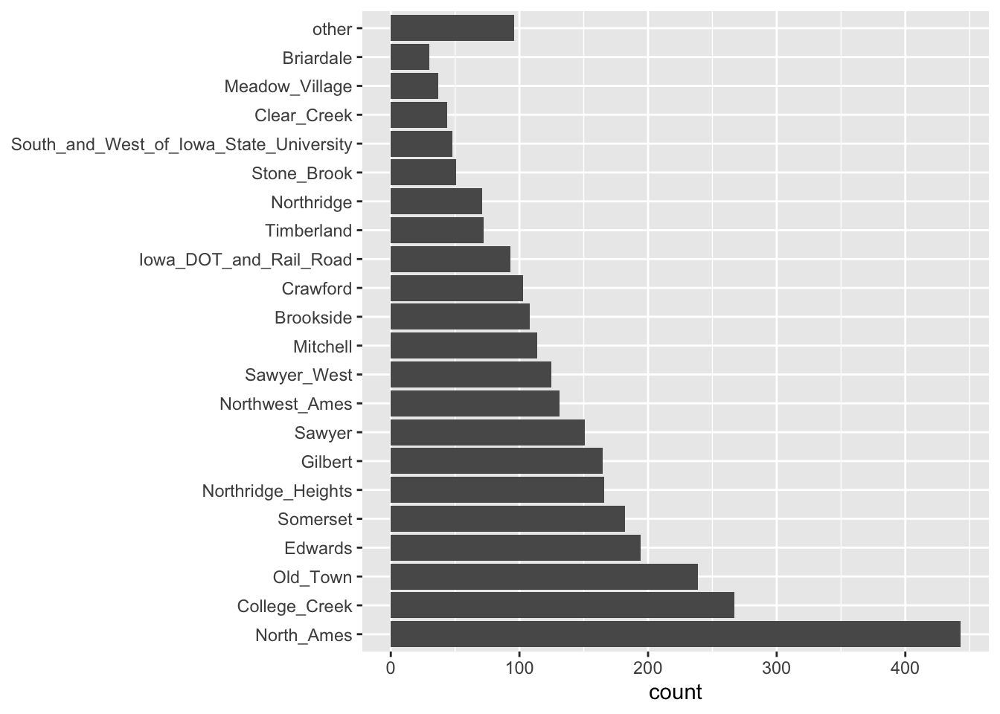
5.4.3.1.2 Interacciones
Los efectos de interacción involucran dos o más predictores. Tal efecto ocurre cuando un predictor tiene un efecto sobre el resultado que depende de uno o más predictores. Numéricamente, un término de interacción entre predictores se codifica como su producto. Las interacciones solo se definen en términos de su efecto sobre el resultado y pueden ser combinaciones de diferentes tipos de datos (por ejemplo, numéricos, categóricos, etc.).
Después de explorar el conjunto de datos de Ames, podríamos encontrar que las pendientes de regresión para el área habitable bruta difieren para los diferentes tipos de edificios:
ggplot(ames, aes(x = Gr_Liv_Area, y = Sale_Price)) +
geom_point(alpha = .2) +
facet_wrap(~ Bldg_Type) +
geom_smooth(method = lm, formula = y ~ x, se = FALSE, col = "red") +
scale_x_log10() +
scale_y_log10() +
labs(x = "Gross Living Area", y = "Sale Price (USD)")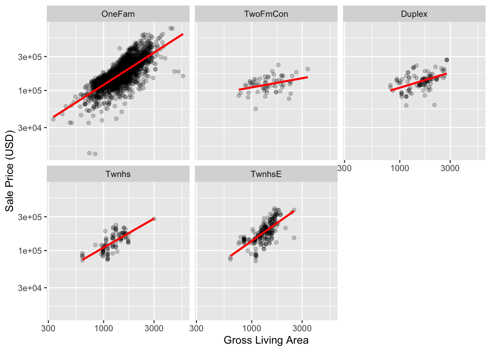
Con la receta actual, step_dummy() ya ha creado variables ficticias.
¿Cómo combinaríamos estos para una interacción? El paso adicional se vería como
step_interact(~ términos de interacción) donde los términos en el lado derecho de la tilde son las interacciones. Estos pueden incluir selectores, por lo que sería apropiado usar:
simple_ames <- recipe(Sale_Price ~ Neighborhood + Gr_Liv_Area + Year_Built + Bldg_Type,
data = ames) %>%
step_log(Gr_Liv_Area, base = 10) %>%
step_other(Neighborhood, threshold = 0.01) %>%
step_dummy(all_nominal_predictors()) %>%
# Gr_Liv_Area está en escala logarítmica
step_interact( ~ Gr_Liv_Area:starts_with("Bldg_Type_") )Se pueden especificar interacciones adicionales en esta fórmula separándolas con el signo \(+\). La receta solamente utilizará interacciones entre diferentes variables.
5.4.3.1.3 Transformaciones generales
Reflejando las operaciones originales de dplyr, los siguientes pasos se pueden usar para realizar una variedad de operaciones básicas a los datos.
step_select(): Selecciona un subconjunto de variables específicas en el conjunto de datos.step_mutate(): Crea una nueva variable o modifica una existente usandodplyr::mutate().step_mutate_at(): Lee una especificación de un paso de receta que modificará las variables seleccionadas usando una función común a través dedplyr::mutate_at().step_filter(): Crea una especificación de un paso de receta que eliminará filas usandodplyr::filter().step_arrange(): Ordena el conjunto de datos de acuerdo con una o más variables.step_rm(): Crea una especificación de un paso de receta que eliminará las variables según su nombre, tipo o función.step_nzv(): Realiza una selección de variables eliminando todas aquellas cuya varianza se encuentre cercana a cero.step_naomit(): Elimina todos los renglones que tengan alguna variable con valores perdidos.step_normalize(): Centra y escala las variables numéricas especificadas, generando una transformación a una distribución normal estándar.step_range(): Transforma el rango de un conjunto de variables numéricas al especificado.step_interact(): Crea un nuevo conjunto de variables basadas en la interacción entre dos variables.step_ratio(): Crea una nueva variable a partir del cociente entre dos variables.all_predictors(): Selecciona a todos los predictores del conjunto de entrenamineto para aplicarles alguna de las funciones mencionadas.all_numeric_predictors(): Selecciona a todos los predictores numéricos del conjunto de entrenamineto para aplicarles alguna de las funciones mencionadas.all_nominal_predictors(): Selecciona a todos los predictores nominales del conjunto de entrenamineto para aplicarles alguna de las funciones mencionadas.
receta <- recipe( ~ ., data = iris) %>%
step_mutate(
dbl_width = Sepal.Width * 2,
half_length = Sepal.Length / 2
) %>%
step_normalize(all_numeric_predictors(), na_rm = T) %>%
step_dummy(all_nominal_predictors(), min_unique = 5)
receta## Data Recipe
##
## Inputs:
##
## role #variables
## predictor 5
##
## Operations:
##
## Variable mutation for dbl_width, half_length
## Centering and scaling for all_numeric_predictors()
## Dummy variables from all_nominal_predictors(), 5La guía completa de las familia de funciones step puede consultarse en la documentación oficial
5.4.3.2 Ejecutar el pre-procesamiento de datos
5.4.3.2.1 Preparar la receta prep()
Esta función devuelve una receta actualizada con las estimaciones.
Dado un conjunto de datos, la función prep() estima las cantidades requeridas y
las estadísticas necesarias para cualquier paso declarado en la receta.
Los datos faltantes se manejan en los pasos; no hay una opción na.rm a nivel de receta o en prep().
prep <- prep(simple_ames)
prep## Data Recipe
##
## Inputs:
##
## role #variables
## outcome 1
## predictor 4
##
## Training data contained 2930 data points and no missing data.
##
## Operations:
##
## Log transformation on Gr_Liv_Area [trained]
## Collapsing factor levels for Neighborhood [trained]
## Dummy variables from Neighborhood, Bldg_Type [trained]
## Interactions with Gr_Liv_Area:(Bldg_Type_TwoFmCon + Bldg_Type_Duplex + Bldg_Type_Twnhs + Bldg_Type_TwnhsE) [trained]5.4.3.2.2 Extracción de datos bake
La función bake() toma una receta como entrenada (con la función prep()) y aplica
las operaciones a un conjunto de datos para crear una matriz de diseño.
Si el conjunto de datos no es demasiado grande, se puede ahorrar tiempo usando la opción retain = TRUE de prep(). Esto almacena la versión procesada del conjunto de datos al que se le aplicó la receta.
Así, con esta opción configurada (por default), la función bake (object, new_data = NULL) devolverá
los datos con los que se entrenó la receta.
Nota: La función juice() devolverá los resultados de una receta en la que se hayan aplicado todos los pasos a los datos. Similar a la función bake() con el comando new_data = NULL.
bake(prep, new_data = NULL) %>% glimpse()## Rows: 2,930
## Columns: 32
## $ Gr_Liv_Area <dbl> 3.219060, 2.95230~
## $ Year_Built <int> 1960, 1961, 1958,~
## $ Sale_Price <int> 215000, 105000, 1~
## $ Neighborhood_College_Creek <dbl> 0, 0, 0, 0, 0, 0,~
## $ Neighborhood_Old_Town <dbl> 0, 0, 0, 0, 0, 0,~
## $ Neighborhood_Edwards <dbl> 0, 0, 0, 0, 0, 0,~
## $ Neighborhood_Somerset <dbl> 0, 0, 0, 0, 0, 0,~
## $ Neighborhood_Northridge_Heights <dbl> 0, 0, 0, 0, 0, 0,~
## $ Neighborhood_Gilbert <dbl> 0, 0, 0, 0, 1, 1,~
## $ Neighborhood_Sawyer <dbl> 0, 0, 0, 0, 0, 0,~
## $ Neighborhood_Northwest_Ames <dbl> 0, 0, 0, 0, 0, 0,~
## $ Neighborhood_Sawyer_West <dbl> 0, 0, 0, 0, 0, 0,~
## $ Neighborhood_Mitchell <dbl> 0, 0, 0, 0, 0, 0,~
## $ Neighborhood_Brookside <dbl> 0, 0, 0, 0, 0, 0,~
## $ Neighborhood_Crawford <dbl> 0, 0, 0, 0, 0, 0,~
## $ Neighborhood_Iowa_DOT_and_Rail_Road <dbl> 0, 0, 0, 0, 0, 0,~
## $ Neighborhood_Timberland <dbl> 0, 0, 0, 0, 0, 0,~
## $ Neighborhood_Northridge <dbl> 0, 0, 0, 0, 0, 0,~
## $ Neighborhood_Stone_Brook <dbl> 0, 0, 0, 0, 0, 0,~
## $ Neighborhood_South_and_West_of_Iowa_State_University <dbl> 0, 0, 0, 0, 0, 0,~
## $ Neighborhood_Clear_Creek <dbl> 0, 0, 0, 0, 0, 0,~
## $ Neighborhood_Meadow_Village <dbl> 0, 0, 0, 0, 0, 0,~
## $ Neighborhood_Briardale <dbl> 0, 0, 0, 0, 0, 0,~
## $ Neighborhood_other <dbl> 0, 0, 0, 0, 0, 0,~
## $ Bldg_Type_TwoFmCon <dbl> 0, 0, 0, 0, 0, 0,~
## $ Bldg_Type_Duplex <dbl> 0, 0, 0, 0, 0, 0,~
## $ Bldg_Type_Twnhs <dbl> 0, 0, 0, 0, 0, 0,~
## $ Bldg_Type_TwnhsE <dbl> 0, 0, 0, 0, 0, 0,~
## $ Gr_Liv_Area_x_Bldg_Type_TwoFmCon <dbl> 0, 0, 0, 0, 0, 0,~
## $ Gr_Liv_Area_x_Bldg_Type_Duplex <dbl> 0, 0, 0, 0, 0, 0,~
## $ Gr_Liv_Area_x_Bldg_Type_Twnhs <dbl> 0, 0, 0, 0, 0, 0,~
## $ Gr_Liv_Area_x_Bldg_Type_TwnhsE <dbl> 0.000000, 0.00000~5.5 Partición de datos
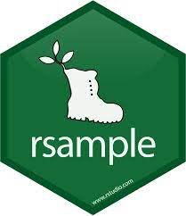
Cuando hay una gran cantidad de datos disponibles, una estrategia inteligente es asignar subconjuntos específicos de datos para diferentes tareas, en lugar de asignar la mayor cantidad posible solo a la estimación de los parámetros del modelo.
Si el conjunto inicial de datos no es lo suficientemente grande, habrá cierta superposición de cómo y cuándo se asignan nuestros datos, y es importante contar con una metodología sólida para la partición de datos.
5.5.1 Métodos comunes para particionar datos
El enfoque principal para la validación del modelo es dividir el conjunto de datos existente en dos conjuntos distintos:
Entrenamiento: Este conjunto suele contener la mayoría de los datos, los cuales sirven para la construcción de modelos donde se pueden ajustar diferentes modelos, se investigan estrategias de ingeniería de características, etc.
La mayor parte del proceso de modelado se utiliza este conjunto.
Prueba: La otra parte de las observaciones se coloca en este conjunto. Estos datos se mantienen en reserva hasta que se elijan uno o dos modelos como los de mejor rendimiento.
El conjunto de prueba se utiliza como árbitro final para determinar la eficiencia del modelo, por lo que es fundamental mirar el conjunto de prueba una sola vez.
Supongamos que asignamos el \(80\%\) de los datos al conjunto de entrenamiento y el \(20\%\) restante a las pruebas. El método más común es utilizar un muestreo aleatorio simple.
El paquete rsample tiene herramientas para realizar divisiones de datos como esta;
la función initial_split() fue creada para este propósito.
library(tidymodels)
tidymodels_prefer()
# Fijar un número aleatorio con para que los resultados puedan ser reproducibles
set.seed(123)
# Partición 80/20 de los datos
ames_split <- initial_split(ames, prop = 0.80)
ames_split## <Analysis/Assess/Total>
## <2344/586/2930>La información impresa denota la cantidad de datos en el conjunto de entrenamiento \((n = 2,344)\), la cantidad en el conjunto de prueba \((n = 586)\) y el tamaño del grupo original de muestras \((n = 2,930)\).
El objeto ames_split es un objeto rsplit y solo contiene la información de partición; para obtener los conjuntos de datos resultantes, aplicamos dos funciones más:
ames_train <- training(ames_split)
ames_test <- testing(ames_split)
dim(ames_train)## [1] 2344 74El muestreo aleatorio simple es apropiado en muchos casos, pero hay excepciones.
Cuando hay un desbalance de clases en los problemas de clasificación, el uso de una muestra aleatoria simple puede asignar al azar estas muestras poco frecuentes de manera desproporcionada al conjunto de entrenamiento o prueba.
Para evitar esto, se puede utilizar un muestreo estratificado. La división de entrenamiento/prueba se lleva a cabo por separado dentro de cada clase y luego estas submuestras se combinan en el conjunto general de entrenamiento y prueba.
Para los problemas de regresión, los datos de los resultados se pueden agrupar artificialmente en cuartiles y luego realizar un muestreo estratificado cuatro veces por separado. Este es un método eficaz para mantener similares las distribuciones del resultado entre el conjunto de entrenamiento y prueba.
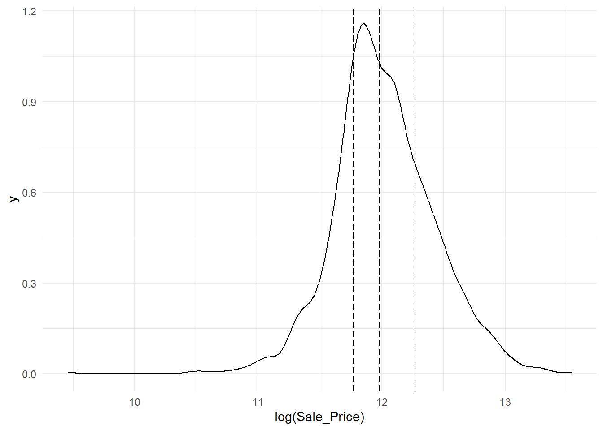
Observamos que la distribución del precio de venta está sesgada a la derecha. Las casas más caras no estarían bien representadas en el conjunto de entrenamiento con una simple partición; esto aumentaría el riesgo de que nuestro modelo sea ineficaz para predecir el precio de dichas propiedades.
Las líneas verticales punteadas indican los cuatro cuartiles para estos datos. Una muestra aleatoria estratificada llevaría a cabo la división 80/20 dentro de cada uno de estos subconjuntos de datos y luego combinaría los resultados. En rsample, esto se logra usando el argumento de estratos:
set.seed(123)
ames_split <- initial_split(ames, prop = 0.80, strata = Sale_Price)
ames_train <- training(ames_split)
ames_test <- testing(ames_split)Hay muy pocas desventajas en el uso de muestreo estratificado.
Un caso es cuando los datos tienen un componente de tiempo, como los datos de series de tiempo. Aquí, es más común utilizar los datos más recientes como conjunto de prueba.
El paquete rsample contiene una función llamada initial_time_split()
que es muy similar a initial_split(). En lugar de usar un muestreo aleatorio, el argumento prop
denota qué proporción de la primera parte de los datos debe usarse como conjunto de entrenamiento;
la función asume que los datos se han clasificado previamente en un orden apropiado.
5.5.2 ¿Qué proporción debería ser usada?
No hay un porcentaje de división óptimo para el conjunto de entrenamiento y prueba. Muy pocos datos en el conjunto de entrenamiento obstaculizan la capacidad del modelo para encontrar estimaciones de parámetros adecuadas y muy pocos datos en el conjunto de prueba reducen la calidad de las estimaciones de rendimiento.
Se debe elegir un porcentaje que cumpla con los objetivos de nuestro proyecto con consideraciones que incluyen:
- Costo computacional en el entrenamiento del modelo.
- Costo computacional en la evaluación del modelo.
- Representatividad del conjunto de formación.
- Representatividad del conjunto de pruebas.
Los porcentajes de división más comunes comunes son:
- Entrenamiento: \(80\%\), Prueba: \(20\%\)
- Entrenamiento: \(67\%\), Prueba: \(33\%\)
- Entrenamiento: \(50\%\), Prueba: \(50\%\)
5.5.3 Conjunto de validación
El conjunto de validación se definió originalmente cuando los investigadores se dieron cuenta de que medir el rendimiento del conjunto de entrenamiento conducía a resultados que eran demasiado optimistas.
Esto llevó a modelos que se sobreajustaban, lo que significa que se desempeñaron muy bien en el conjunto de entrenamiento pero mal en el conjunto de prueba.
Para combatir este problema, se retuvo un pequeño conjunto de datos de validación y se utilizó para medir el rendimiento del modelo mientras este está siendo entrenado. Una vez que la tasa de error del conjunto de validación comenzara a aumentar, la capacitación se detendría.
En otras palabras, el conjunto de validación es un medio para tener una idea aproximada de qué tan bien se desempeñó el modelo antes del conjunto de prueba.
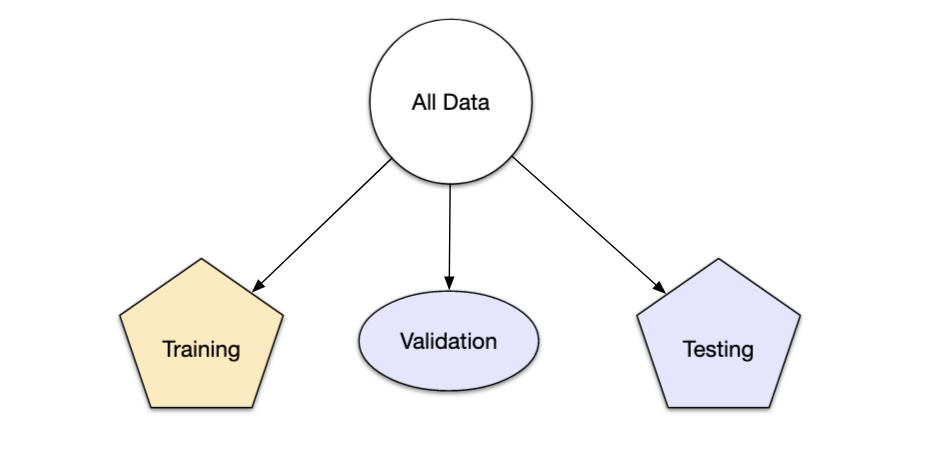
Los conjuntos de validación se utilizan a menudo cuando el conjunto de datos original es muy grande. En este caso, una sola partición grande puede ser adecuada para caracterizar el rendimiento del modelo sin tener que realizar múltiples iteraciones de remuestreo.
Con rsample, un conjunto de validación es como cualquier otro objeto de remuestreo; este tipo es diferente solo en que tiene una sola iteración
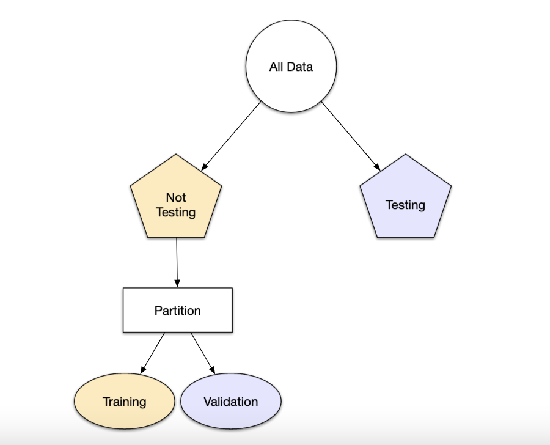
set.seed(12)
val_set <- validation_split(ames_train, prop = 3/4, strata = NULL)
val_set #val_set contiene el conjunto de entrenamiento y validación.## # Validation Set Split (0.75/0.25)
## # A tibble: 1 x 2
## splits id
## <list> <chr>
## 1 <split [1756/586]> validationEsta función regresa una columna para los objetos de división de datos y una columna llamada id que tiene una cadena de caracteres con el identificador de remuestreo.
El argumento de estratos hace que el muestreo aleatorio se lleve a cabo dentro de la variable de estratificación. Esto puede ayudar a garantizar que el número de datos en los datos del análisis sea equivalente a las proporciones del conjunto de datos original. (Los estratos inferiores al 10% del total se agrupan).
5.5.4 Leave-one-out cross-validation
La validación cruzada es una manera de predecir el ajuste de un modelo a un hipotético conjunto de datos de prueba cuando no disponemos del conjunto explícito de datos de prueba.
El método LOOCV en un método iterativo que se inicia empleando como conjunto de entrenamiento todas las observaciones disponibles excepto una, que se excluye para emplearla como validación.
Si se emplea una única observación para calcular el error, este varía mucho dependiendo de qué observación se haya seleccionado. Para evitarlo, el proceso se repite tantas veces como observaciones disponibles se tengan, excluyendo en cada iteración una observación distinta, ajustando el modelo con el resto y calculando el error con dicha observación.
Finalmente, el error estimado por el es el promedio de todos lo \(i\) errores calculados.
La principal desventaja de este método es su costo computacional. El proceso requiere que el modelo sea reajustado y validado tantas veces como observaciones disponibles se tengan lo que en algunos casos puede ser muy complicado.
rsample contiene la función loo_cv().
set.seed(55)
ames_loo <- loo_cv(ames_train)
ames_loo## # Leave-one-out cross-validation
## # A tibble: 2,342 x 2
## splits id
## <list> <chr>
## 1 <split [2341/1]> Resample1
## 2 <split [2341/1]> Resample2
## 3 <split [2341/1]> Resample3
## 4 <split [2341/1]> Resample4
## 5 <split [2341/1]> Resample5
## 6 <split [2341/1]> Resample6
## 7 <split [2341/1]> Resample7
## 8 <split [2341/1]> Resample8
## 9 <split [2341/1]> Resample9
## 10 <split [2341/1]> Resample10
## # ... with 2,332 more rows5.5.4.1 Cálculo del error
En la validación cruzada dejando uno fuera se realizan tantas iteraciones como muestras \((N)\) tenga el conjunto de datos. De forma que para cada una de las \(N\) iteraciones se realiza un cálculo de error.
El resultado final se obtiene realizando la media de los \(N\) errores obtenidos, según la fórmula:
\[E = \frac{1}{N}\sum_{i = 1}^N E_i\]
5.5.5 V Fold Cross Validation
En la validación cruzada de V iteraciones (V Fold Cross Validation) los datos de muestra se dividen en V subconjuntos. Uno de los subconjuntos se utiliza como datos de prueba y el resto \((V-1)\) como datos de entrenamiento. El proceso de validación cruzada es repetido durante \(v\) iteraciones, con cada uno de los posibles subconjuntos de datos de prueba.
Finalmente se obtiene el promedio de los rendimientos de cada iteración para obtener un único resultado. Lo más común es utilizar la validación cruzada de 10 iteraciones.

Este método de validación cruzada se utiliza principalmente para:
Estimar el error cuando nuestro conjunto de prueba es muy pequeño. Es decir, se tiene la misma confuguración de parámetos y solamente cambia el conjunto de prueba y validación.
Encontrar lo mejores hiperparámetros que ajusten mejor el modelo. Es decir, en cada bloque se tiene una configuración de hiperparámetros distinto y se seleccionará aquellos hiperparámetros que hayan producido el error más pequeño.
En la función vfold_cv() la entrada principal es el conjunto de entrenamiento,
así como el número de bloques:
set.seed(55)
ames_folds <- vfold_cv(ames_train, v = 10)
ames_folds## # 10-fold cross-validation
## # A tibble: 10 x 2
## splits id
## <list> <chr>
## 1 <split [2107/235]> Fold01
## 2 <split [2107/235]> Fold02
## 3 <split [2108/234]> Fold03
## 4 <split [2108/234]> Fold04
## 5 <split [2108/234]> Fold05
## 6 <split [2108/234]> Fold06
## 7 <split [2108/234]> Fold07
## 8 <split [2108/234]> Fold08
## 9 <split [2108/234]> Fold09
## 10 <split [2108/234]> Fold10La columna denominada splits contiene la información sobre cómo dividir los datos
(similar al objeto utilizado para crear la partición inicial de entrenamiento / prueba).
Si bien cada fila de divisiones tiene una copia incrustada de todo el conjunto de entrenamiento, R es lo suficientemente inteligente como para no hacer copias de los datos en la memoria.
El método de impresión dentro del tibble muestra la frecuencia de cada uno: [2K / 230] indica que aproximadamente dos mil muestras están en el conjunto de análisis y 230 están en ese conjunto de evaluación en particular.
Estos objetos rsample también contienen siempre una columna de caracteres llamada id que etiqueta la partición. Algunos métodos de remuestreo requieren varios campos de identificación.
Para recuperar manualmente los datos particionados, las funciones de analysis()
y assessment() devuelven los de datos de análisis y evaluación respectivamente.
# Primer bloque
ames_folds$splits[[1]] %>%
analysis() %>% # O assessment()
head(7)## # A tibble: 7 x 74
## MS_SubClass MS_Zoning Lot_Frontage Lot_Area Street Alley Lot_Shape
## <fct> <fct> <dbl> <int> <fct> <fct> <fct>
## 1 One_Story_1946_a~ Residential_~ 70 8400 Pave No_All~ Regular
## 2 Two_Story_PUD_19~ Residential_~ 21 1680 Pave No_All~ Regular
## 3 Two_Story_PUD_19~ Residential_~ 21 1680 Pave No_All~ Regular
## 4 Two_Story_PUD_19~ Residential_~ 21 1680 Pave No_All~ Regular
## 5 One_Story_PUD_19~ Residential_~ 53 4043 Pave No_All~ Regular
## 6 One_Story_PUD_19~ Residential_~ 24 2280 Pave No_All~ Regular
## 7 One_Story_PUD_19~ Residential_~ 50 7175 Pave No_All~ Regular
## # ... with 67 more variables: Land_Contour <fct>, Utilities <fct>,
## # Lot_Config <fct>, Land_Slope <fct>, Neighborhood <fct>, Condition_1 <fct>,
## # Condition_2 <fct>, Bldg_Type <fct>, House_Style <fct>, Overall_Cond <fct>,
## # Year_Built <int>, Year_Remod_Add <int>, Roof_Style <fct>, Roof_Matl <fct>,
## # Exterior_1st <fct>, Exterior_2nd <fct>, Mas_Vnr_Type <fct>,
## # Mas_Vnr_Area <dbl>, Exter_Cond <fct>, Foundation <fct>, Bsmt_Cond <fct>,
## # Bsmt_Exposure <fct>, BsmtFin_Type_1 <fct>, BsmtFin_SF_1 <dbl>, ...5.5.6 Medidas de ajuste
Las medidas de ajuste obtenidas pueden ser utilizadas para estimar cualquier medida cuantitativa de ajuste apropiada para los datos y el modelo.
En un modelo basado en clasificación binaria, para resumir el ajuste del modelo se pueden usar las medidas:
- Tasa de error de clasificación (Accuracy)
- Precisión
- Sensibilidad o coertura (Recall)
- Especificidad
Cuando el valor a predecir se distribuye de forma continua se puede calcular el error utilizando medidas como:
- Error porcentual absoluto medio (MAPE)
- Error absoluto medio (MAE)
- Error cuadrático medio (MSE)
- Raíz del error cuadrático medio (RMSE)
- Raíz del error logarítmico cuadrático medio (RMLSE)
- \(R^2\) (Coeficiente de determinación)
- \(R^2_a\) (Coeficiente de determinación ajustado)
5.5.6.1 Cálculo del error
En cada una de las \(v\) iteraciones de este tipo de validación se realiza un cálculo de error. El resultado final lo obtenemos a partir de realizar la media de los \(V\) valores de errores obtenidos, según la fórmula:
\[E = \frac{1}{V}\sum_{i = 1}^vE_i\]
5.5.7 Validación cruzada para series de tiempo
En este procedimiento, hay una serie de conjuntos de prueba, cada uno de los cuales consta de una única observación. El conjunto de entrenamiento correspondiente consta solo de observaciones que ocurrieron antes de la observación que forma el conjunto de prueba. Por lo tanto, no se pueden utilizar observaciones futuras para construir el pronóstico.
El siguiente diagrama ilustra la serie de conjuntos de entrenamiento y prueba, donde las observaciones azules forman los conjuntos de entrenamiento y las observaciones rojas forman los conjuntos de prueba.

La precisión del pronóstico se calcula promediando los conjuntos de prueba. Este procedimiento a veces se conoce como “evaluación en un origen de pronóstico continuo” porque el “origen” en el que se basa el pronóstico avanza en el tiempo.
Con los pronósticos de series de tiempo, los pronósticos de un paso pueden no ser tan relevantes como los pronósticos de varios pasos. En este caso, el procedimiento de validación cruzada basado en un origen de pronóstico continuo se puede modificar para permitir el uso de errores de varios pasos.
Suponga que estamos interesados en modelos que producen buenos pronósticos de 4 pasos por delante. Entonces el diagrama correspondiente se muestra a continuación.
 La validación cruzada de series de tiempo se implementa con la función
La validación cruzada de series de tiempo se implementa con la función tsCV()
del paquete forecast.
En el siguiente ejemplo, comparamos el RMSE residual con el RMSE obtenido mediante la validación cruzada de series de tiempo.
library(fpp)
e <- tsCV(dj, rwf, drift=TRUE, h=1)
sqrt(mean(e^2, na.rm=TRUE))## [1] 22.68249sqrt(mean(residuals(rwf(dj, drift=TRUE))^2, na.rm=TRUE))## [1] 22.49681Aquí se aplicó una caminata aleatoria con deriva a la serie temporal del índice Dow-Jones.
El primer cálculo implementa una validación cruzada de series de tiempo de un solo paso en la que el parámetro de deriva se vuelve a estimar en cada origen de pronóstico.
El segundo cálculo estima el parámetro de deriva una vez para todo el conjunto de datos y luego calcula el RMSE a partir de los pronósticos de un paso. Como se esperaba, el RMSE de los residuos es menor, ya que los “pronósticos” correspondientes se basan en un modelo ajustado a todo el conjunto de datos, en lugar de ser pronósticos verdaderos.
La función tsCV() es muy general y funcionará para cualquier función de pronóstico
que devuelva un objeto de clase forecast. Ni siquiera se tiene que especificar
el tamaño de muestra mínimo para el ajuste del modelo, ya que se ajustará
silenciosamente a los modelos comenzando con una sola observación y devolverá
un valor faltante cuando el modelo no se pueda estimar.
5.5.8 Otros tipos de validación cruzada
Validación cruzada repetida
Validación cruzada de Monte Carlo
Validación cruzada aleatoria
Validación cruzada en \(V\) bloques para modelos de autoregresión